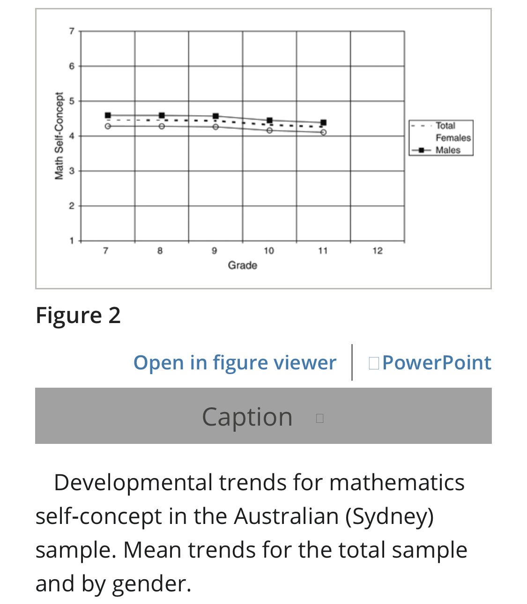
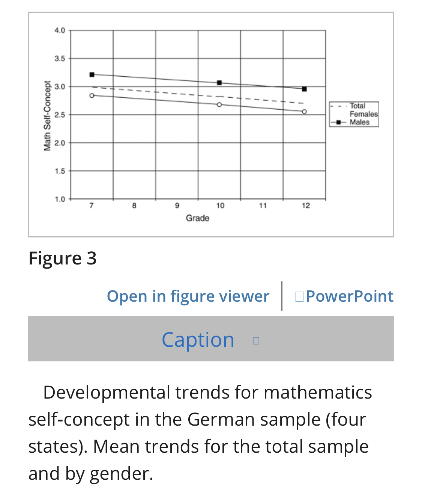
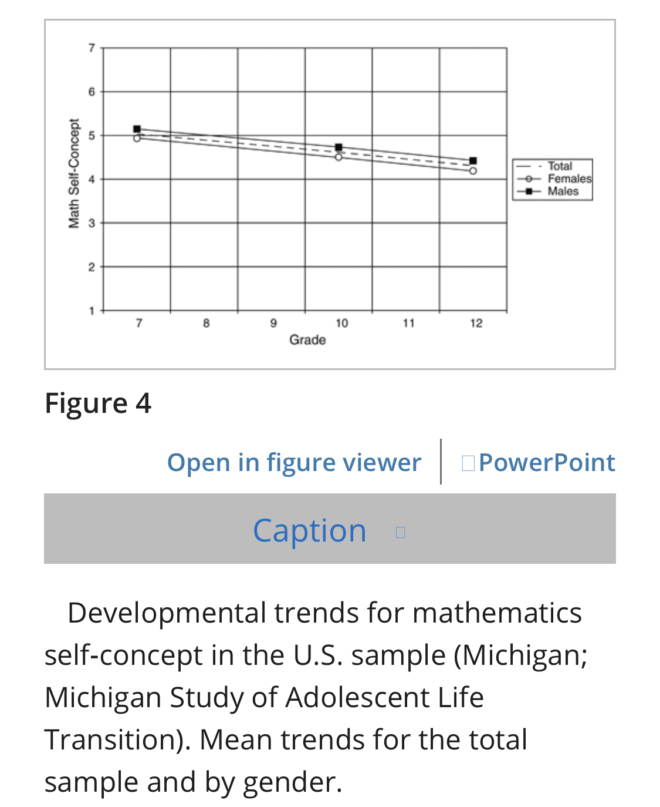

Encyclopediac's Totally Impartial Factsheet.
Introduction
- Howdy! This page is a factsheet that informs on a variety of subjects.
- Currently a conversion from an old storage device is needed, so this will look empty for the time being.
- Feel free to follow the sources I have included to see if my summaries are accurate and reflective of their contents. However, some of them are pay-blocked and I am unable to help with that.
- Table of Contents for this factsheet (including pages dedicated pages to topics covered here): Table of Contents
- The mediator between head and hands must be the heart!
Legend and Keys.
- [I]: This marks that a section is incomplete, either because the research is unsatisfactory or the sources have not been read completely.
- Referencing:
- Regular reports, studies, and articles follow the current format: [•Title•, (published year/date), author(s)]; then the link to the source if available above the summary.
- Meta-analyses/Systemic reviews/Literature reviews follow the current format: [•Title•, (published year/date), author(s)] - (summary of meta-analysis/review); then the link to the source if available above the summary.
- If a source has no date, then 'n.d.' is written.
- Comments from me, and not the authors of the source, are noted by [] brackets.
- Sections labelled 'SUMMARY' or 'Content summary' are written by me.
Gender & Sexism
Impact of Academic Self-Concept (ASC) on Education and Achievement - And the Differences in Gender.
Content summary:
- Not only is ASC closely linked to academic achievement, but it can be seen that increasing the former has positive implications for the latter. Additionally, a consistent gender gap in ASC can be seen across multiple western cultures from grades 7-11, and the gap is likely traceable to gender-stereotypes. A certain ASC in specific domains (boys are seen to lead in ASC in most domains, though not all) can lead to students pursuing different careers and subjects in the future. Therefore: since differing ASCs in certain domains lead to different career and expertise choices later on in life, one way to improve gender distribution in professions and subjects could be seeking to fight against gender stereotypes to decrease the ASC gender gap, which also could lead to improved academic achivement by girls in certain domains.
Why ASC is Important: Reciprocal Link Between ASC and Academic Achievement.
[•A Meta-analysis of the Longitudinal Relationship Between Academic Self-Concept and Academic Achievement•, 2021, Huimin Wu, Yiqun Guo, Yingkai Yang, Le Zhao, Cheng Guo] - meta-analysis of 68 longitudinal studies (240 effect sizes)
- SUMMARY: There is a signifiant reciprocal relationship between ASC and Academic Achievement (AA) (one is able to affect and predict the other, and vice-versa). This meta-analysis reflects sample sizes from mostly culturally western backgrounds, and China. The relevant domains investigated were verbal and mathematical. The relationship between ASC and AA was moderated by age, though the relationship still holds for children and adolescents. Therefore: promoting ASC is important in improving AA in educational contexts.
- Key Quotes:
- The reciprocal relationship between academic self-concept (ASC) and academic achievement has been documented in multiple studies.
- The results found that achievement significantly predicted ASC (β = 0.16, p < 0.01) and vice-versa (β = 0.08, p < 0.01) after controlling for the initial level of outcome variables, which provided further evidence for the reciprocal effects model (REM).
- The 68 studies included in the present meta-analysis were published between 1981 and 2020, with a median publication year in 2011. In total, 240 effect sizes were reported based on 72 independent samples. Sample sizes ranged from 43 to 14,985 (M = 1,538, SD = 2,687, Median [Mdn] = 546). The proportion of female participants ranged from 0 to 100%, with a mean of 47.17%. The average age of participants at the first assessment varied between 6.60 and 20.50 (M = 12.19, SD = 2.92, Mdn = 12.20). Time lags between assessments ranged from 3 to 66 months (M = 20.62, SD = 13.46, Mdn = 18). Most publications were conducted in the US (33.8%), Germany (17.6%), China (10.3%), Canada (5.9%), and Australia (5.9%). In total, 58.8% of studies explored the relationship between ASC and achievement in verbal or mathematical domains, while the remainder explored the relationship between general ASC and achievement.
- The current meta-analysis explored the longitudinal relationship between ASC and achievement and its moderators by a focus upon available studies. Consistent with previous longitudinal studies (e.g., Wigfield & Eccles, 2000; Marsh et al., 2002; Gorges et al., 2018; Weidinger et al., 2018; Sewasew & Schroeders, 2019), our results found that ASC and achievement affected each other mutually within domains over time, supporting the REM.
- The REM suggests that students are likely to feel more competent in subjects in which they perform better, and the sense of competence also affects subsequent achievement.
- Our findings corroborated the argument that a positive ASC is an important educational outcome and a mediating variable that promotes the development of achievement (Marsh & Martin, 2011; Möller et al., 2009).
- Moderator analyses revealed that the effect of ASC on achievement and the effect of achievement on ASC were moderated by student age, although the support for the REM was found in both childhood and adolescence.
- What factors might explain this developmental change? During elementary school, students’ ASC undergoes a process of shaping and reshaping that is dominated by cumulative achievement-related success and failure (Skaalvik & Hagtvet, 1990). The motivational properties of ASC have not been fully developed; thus, their influence on achievement is limited (Helmke & van Aken, 1995). However, ASC is expected to exert increasing effects on achievement or other academic choices when it is firmly established and more stable (Wigfield & Karpathian, 1991)
- Age differences in the relationship between ASC and achievement might be related to the maturation of cognitive ability, which enables students to make inferences regarding their own and others’ competence by integrating multiple information resources such as performance feedback and reflected appraisals from significant others (Weidinger et al., 2018).
- Furthermore, significant changes have occurred in the educational environment for students beyond elementary school, with students having to participate in an increasing number of normative evaluations and receive more judgments from teachers (Dweck, 2002; Stipek & Iver, 1989). Such feedback helps students to establish competence beliefs more firmly, thereby boosting the effect of ASC on achievement.
- The effect of ASC on achievement for low-achieving students was significantly weaker than typical-achieving students. Low-achieving students experience less success and more academic challenges, which can lead to their academic motivation being weakened and the effect of ASC on achievement being greatly reduced (Hampton & Mason, 2003; Prast et al., 2018). Nevertheless, we cannot ignore the implications of ASC for achievement for low-achieving students. Instead, high ASC might be especially beneficial for subsequent achievement among low-achieving students because the motivational properties of ASC could initiate adaptive learning strategies and behaviors such as efforts and persistence, which would have a positive effect on future achievement and success (Marsh, 1990; Marsh & Martin, 2011; Wigfield & Eccles, 2000).
- Studies using standardized tests as indicators of achievement tended to report a weaker relationship between ASC and achievement than studies using grades or teacher-rating as indicators. As mentioned in the introduction, standardized testing is not high-stakes and not of personal significance for the students, while grades and teacher-rating often serve other functions such as motivating students (Kriegbaum et al., 2018; Pinxten et al., 2010). ASC possesses motivational properties, so this leads to the closer correlation between ASC and grade or teacher-rating as they are directly related to motivation (Valentine et al., 2004; Wylie, 1974).
Consistent Gender Gap in ASC in Secondary Education.
[•The Development of Students' Mathematics Self‐Concept in Relation to Gender: Different Countries, Different Trajectories?•, 2010, Gabriel Nagy, Helen M. G. Watt, Jacquelynne S. Eccles, Ulrich Trautwein, Oliver Lüdtke, Jürgen Baumert]
- SUMMARY: This study shows that there is a consistent gender gap in ASC throughout different ages in Australia, Germany, and the United States. This gap is stable and consistent for all ages of students that were studied, though the gap never increases or decreases in size. This is important because of the link between ASC and achievement, and how this leads to students making different choices in expertise later in life, this gap is important. The study claims the consistency can be explained by effects seen before or after grade 7-11 education is finished. The authors suggest that this can be from before grade 7, and that may likely be inspired by gender stereotypes. Therefore: there are consistent gender gaps in ASC across different western nations, which can likely be explained by gender stereotypes; futhermore, the differences likely lead to different choices in careers and study down the line.
- Key Quotes:
- This study extends previous research by examining the development of mathematics self‐concept across grades 7–12 in three cultural settings: Australia (Sydney; N=1,333), the United States (Michigan; N=2,443), and Germany (four federal states; N=4,688). Results of latent growth curve models document very similar patterns of self‐concept development in males and females in the three settings. First, gender differences in favor of boys were observed at the beginning of the observation period (grade 7). Second, gender was not significantly related to self‐concept change in either group, meaning that initial differences persisted across time. Third, the results provided no evidence that the form of the longitudinal change trajectories for mathematics self‐concept differed across the cultural settings.
- Given the close connection of academic self‐concept to achievement and achievement‐related choices, and given the potential of this construct to explain gendered patterns of choice behavior, the widespread interest in gender differences in self‐concept development is hardly surprising.
- The present investigation was undertaken to provide more conclusive evidence on how cultural and institutional influences impact adolescents' self‐concept development. To this end, we focused on one domain‐specific academic self‐concept, namely, mathematics self‐concept.
- [Australia Results:] The raw data indicate a small decreasing trend in mean mathematics self‐concept scores accompanied by decreasing variances. Furthermore, the mathematics self‐concept scales were significantly correlated with gender, although the magnitude of the association was rather small.
- Boys had a higher mathematics self‐concept than girls in grade 7 (b=.31, SE=.06, p<.01), but there was no gender difference in the amount of change (b=−.02, SE=.06, p=.36). Overall, this pattern of results indicates stable gender differences in mathematics self‐concept that neither diminish nor increase over the course of secondary education in Australia. Figure 2 illustrates the mean self‐concept trajectories for the total sample and by gender. As shown, the trajectories were nonlinear and appear to decline slightly more in senior grades.

- [Germany Results:] Mean scores indicate a decreasing trend for mathematics self‐concept. Correlations with gender suggest that gender differences remained stable across time.
- In sum, the analyses of the German data document decreasing trends in mathematics self‐concept. The results also provide evidence for gender differences in mathematics self‐concept, but not for relations between students' gender and the amount of change in self‐concept. This pattern of results is illustrated in Figure 3.

- [US Results:] Figure 4 illustrates the mean self‐concept trajectories for the total sample and by gender. As shown, the trajectories appear to be linear across the three time points under consideration.

- The analyses presented drew on large student samples and overcame some of the shortcomings of previous attempts to compare the results of different primary investigations.
- a general decline in mathematics self‐concept was evident in all three countries. There was no evidence for qualitative differences across settings in this pattern of change. Second, consistent gender differences in mathematics self‐concept were found in all settings. Males scored higher than females at the beginning of grade 7 in all contexts, but the magnitude of these gender differences varied. The largest differences were found for Germany, with smaller gender gaps in Australia (Sydney) and the United States (Michigan). Third, and most surprising, there was no evidence for gender differences in self‐concept change (consistent with patterns for perceived talent; Watt, 2004). This pattern is inconsistent with both the gender intensification model and the gender convergence hypothesis.
- findings suggest that—at least for the cultural settings examined, the period from grades 7 to 12, and the mathematical domain—initial gender differences in self‐concept persist unchanged. This does not imply that there are no gender differences in self‐concept development per se. It seems more likely—at least for the mathematical domain—that such differences materialize before or/and after the period considered here. Indeed, the findings provided by Jacobs et al. (2002) suggest that the largest gender‐related changes occur between grades 1 and 7, a period that was not included in the present study.
- some research suggests that gender differences in mathematics self‐concept emerge as early as the beginning of primary school (Fredricks & Eccles, 2002; Jacobs et al., 2002). From this perspective, stereotypic gender roles seem to have an important impact early in individual developmental trajectories. Our research suggests that such stereotypes seem to be more influential in some countries (e.g., Germany) than in others. This finding is line with the higher gender norm differentiation reported for German society (Williams & Best, 1990).
Academic Self-Efficacy (ASE) and Impacts on Achievement - and Differences In Gender.
Content summary:
- ASE is a key predictor of academic achievement and can influence career path and achievement. ASE differs from ASC in that ASE is more task-specific, whereas ASC is more domain-specific (narrow vs. broad). Differences in ASE by girls and boys shows tha boys lead in many ASE metrics, though not all, and that this gap grows more significant with age. The gaps are consistent with gender stereotypes. Therefore: to improve gender balances in a careers and 'economic achievement', society ought to fight against gender stereotypes to prevent the ASE gap from manifesting in a significant way.
Gender Gap in ASE, The Importance of ASE, and the Difference between ASE and ASC.
[•Gender differences in academic self-efficacy: a meta-analysis•, 2012, Chiungjung Huang] - meta-analysis of 187 studies, with a total sample size of 68,429.
- SUMMARY: This meta-analysis examines the gender-gap in ASE. This is different from ASC, in that ASC normally self-evaluation of domain-specific skills, whereas ASE is for task-specific skills self-evaluation (broad vs. specific). ASE is important because, like ASC, it is a key predictor of academic success. The meta-analysis found significant differences between the ASE of boys and girls, though it was small (0.08 effect size value). Despite it being small, this is still important as ASE is an important predictor in 'academic/career choice' for students of all genders and leads to different career paths, and thus 'economic achievement', due to ASE causing different choices in higher education subjects and career choices. Boys were seen to lead in Mathematics, Computer, and Social Sciences (though the number of studies showing the lead in Social Sciences is small, so it should be taken with a grain of salt); girls were higher in arts. For Science, no differences were found. The effect sizes (the gender gap in ASE) of the meta-analysis were more likely to be signifcant for older students, for instance, all effect sizes for Mathematics ASE in students older than 14 were significantly different from 0 (with boys having higher ASE than girls) though it was not significant for students younger than 14.
- Key Quotes:
- A meta-analysis of 187 studies containing 247 independent studies (N = 68,429) on gender differences in academic self-efficacy identified an overall effect size of 0.08, with a small difference favoring males. Moderator analysis demonstrated that content domain was a significant moderator in explaining effect size variation. Females displayed higher language arts self-efficacy than males. Meanwhile, males exhibited higher mathematics, computer, and social sciences self-efficacy than females. Gender differences in academic self-efficacy also varied with age. The largest effect size occurred for respondents aged over 23 years old. For mathematics self-efficacy, the significant gender differences emerged in late adolescence.
- Bandura (1977, 1982, 1986) defined self-efficacy as the perceived ability of an individual to succeed at or accomplish certain tasks.
- Academic self-efficacy is essential to academic success (Lent et al. 1984, 1986, 1987). The criterion-related validity of academic self-efficacy has been documented by several primary studies and one meta-analysis. Multon et al. (1991) analyzed 36 studies that examined the relation of academic self-efficacy with performance and persistence and identified a mean correlation of r = 0.38 for performance and r = 0.34 for persistence. Given the importance of academic self-efficacy to academic achievement and persistence, determining whether academic self-efficacy is associated with other important variables is worthwhile.
- [Why ASC and ASE are different:] Pajares and Miller (1994) claimed that self-efficacy denotes an individual’s perceived ability to complete a specific task. Consequently, self-efficacy is directly related to a task, context, or situation. Self-concept is a more general and global assessment of self-attitudes than self-efficacy. Self-concept can be domain-specific but not task-specific.
- The effect size used in this study was Hedge’s g (Hedges and Olkin 1985), computed by subtracting female mean from the male mean, then dividing by the pooled standard deviation of both groups.
- Positive values for g reveal that males had higher academic self-efficacy than females, while negative values demonstrate that females outperformed males.
- For the 247 independent effect sizes, the mean was g = 0.08 with a 95% confidence interval of 0.03 to 0.12. As the significance of the mean effect size can be tested by 95% confidence interval, the mean effect size was significantly different from zero.
- the majority of the samples were conducted in the USA (N = 201), 14 were conducted in Taiwan, 9 in Canada, 5 in Australia, 3 in Israel, and 2 in Japan. China, Greece, India, Malaysia, Norway, Sultan, Sweden, Turkey, and UK each accounted for one sample.
- The mean effect sizes for language arts, mathematics, social science, and computer self-efficacy differed significantly from 0. For language arts self-efficacy, the mean effect size was g = −0.16, indicating higher female language arts self-efficacy. For mathematics self-efficacy, the mean effect sizes were g = 0.18, indicating higher male mathematics self-efficacy. Higher male self-efficacy than female self-efficacy was also observed for computer self-efficacy. These findings are consistent with gender stereotypes. Although males exhibited higher social science self-efficacy, this finding was based on only five data points, and therefore, caution is necessary in interpreting this result.
- Categorical model analyses indicate that gender differences exist in the four domains of academic self-efficacy—language arts, mathematics, computer, and the social sciences. Females had higher language arts self-efficacy than males, while males had higher self-efficacy in mathematics, computer, and the social sciences than females. As the number of studies on gender differences in self-efficacy of the social sciences was insufficient, findings for social sciences self-efficacy should be taken cautiously.
- Conversely, no gender differences exist in science self-efficacy.
- Pajares (2002) proposed that males and females have similar levels of mathematics self-efficacy during elementary school, while males develop higher mathematics self-efficacy than females by middle school. The age effect was supported by this meta-analysis. Effect sizes for students aged 15–18 and >23 years differed significantly from 0, as the 95% confidence interval did not include 0. For mathematics self-efficacy, no evidence existed for the emergence of a significant gender difference from childhood to early adolescence; in groups of students aged 6–10 and 11–14, effect sizes did not differ significantly from 0. Conversely, among all groups of students aged over 14, all effect sizes were statistically significant, with males having higher mathematics self-efficacy than females.
- The practical implication is that programs designed to improve the academic self-efficacy of girls are needed, especially for female adults.
- Researchers may choose not report non-significant effect sizes because non-significant outcomes may not be published (Sutton 2009). Therefore, publication status may be a moderating factor for gender differences in academic self-efficacy. Findings obtained by this meta-analysis do not support this contention.
- This study tested the assumption of equality of variance of gender groups. Consistent with the finding for self-esteem (Kling et al. 1999), males and females displayed similar variances in terms of academic self-efficacy. Since equality of variance of gender groups holds, comparing means of academic self-efficacy between males and females is valid.
- To summarize, gender differences in academic self-efficacy were statistically significant but small. However, these small effects may have practical importance. Lent et al. (1986) and Lent et al. (2005) suggested that academic self-efficacy is a key variable in academic/career choice for both male and female students. Moreover, gender gaps in academic self-efficacy increase as age increased in this meta-analysis. Consequently, a small effect size during early life may result in differential economic achievement between males and females because of differences in academic self-efficacy, course selection, and career choices.
Transgender people
Detransitioning and its' Prevalance
Content summary:
- test
The Percentage of People that Ever Detransition is Low - The Percentage of that do so Because of Regret is Lower
[•The Report of the 2015 U.S. Transgender Survey.•, 2016, Sandy E. James, Jody L. Herman, Susan Rankin, Mara Keisling, Lisa Mottet, Ma’ayan Anafi]
- SUMMARY:
- Key Quotes:
- The 2015 U.S. Transgender Survey (USTS) is the largest survey examining the experiences of transgender people in the United States, with 27,715 respondents from all fifty states, the District of Columbia, American Samoa, Guam, Puerto Rico, and U.S. military bases overseas
- Respondents were asked whether they had ever “de-transitioned,” which was defined as having “gone back to living as [their] sex assigned at birth, at least for a while.” Eight percent (8%) of respondents reported having de-transitioned at some point.
- [But] Most of those who de-transitioned did so only temporarily: 62% of those who had de-transitioned reported that they were currently living full time in a gender different than the gender they were thought to be at birth.
- only 5% of those who had de-transitioned reported that they had done so because they realized that gender transition was not for them, representing 0.4% of the overall sample.
- The most common reason cited for de-transitioning was pressure from a parent (36%). Twenty-six percent (26%) reported that they de-transitioned due to pressure from other family members, and 18% reported that they de- transitioned because of pressure from their spouse or partner. Other common reasons included facing too much harassment or discrimination after they began transitioning (31%), and having trouble getting a job (29%)
![Table presenting the composition of the 8% group which has transitioned and then decided to detransition. The most used reason is 'Pressure from a parent' at 36%, whilst only 5% can be attributed to people who decided that 'gender transition was not for them'. 33% claimed they did so because transitioning was 'too hard for them', 31% due to too much harrassment, 29% because it made getting a job harder, 26% was due to pressure from other family memmbers, 18% was from pressure experienced from spouces and partners, 17% and 13% due to pressure from employers and friends respectively, 5% was pressure from a health professional, 5% was pressure from a religious counselor, 4% was because they their 'initial transition did not reflect the complexity of their gender', 3% was for financial reasons, 2% was from medical reasons, and the final 35% was due to some other responce which was not listed.](images/2-1-2-image-0.png)
[•What does the scholarly research say about the effect of gender transition on transgender well-being?•, n.d.] - meta-analysis of 55 studies + 17 literature reviews
- SUMMARY: test
- Key Quotes:
- Regrets following gender transition are extremely rare and have become even rarer as both surgical techniques and social support have improved. Pooling data from numerous studies demonstrates a regret rate ranging from .3 percent to 3.8 percent. Regrets are most likely to result from a lack of social support after transition or poor surgical outcomes using older techniques.
Cancer
Content summary:
- [NOTE: This is not medical advise and should not be treated as such.]
- Transgender women who take feminising HRT have higher risks of breast cancer than cisgender men because of the increased risks of cancer in breast tissue that estrogens may cause. Additionally, transgender women's increased likelihood of having denser breast tissue also independently increases the odss of breast cancer. Though the odds of breast cancer are lower than that in cisgender women, it is still recommended that transgender women perform mammograms past the age of 50, if they have taken feminising HRT for a long time. As for cervical cancer,it is recognised that transgender women who have not gone under any form of vaginoplasty have no risk of cervical cancer. For those that have, based on the most common technique, there is a noticably increased risk in dysplasia and certain invasive cancers. Though the risk overall is low, it is recommended for post-operative transgender women to consult with their doctors and to have regular check ups for this threat. Therefore: it is fair to say that transgender women, on average, have higher odds of breast cancer than cisgender men; that for cervical cancer, though the odds are low, post-operative transgender women face a noticeable increased risk of cervical cancers through HPV; that it is medically recommended for them to treat all of these risks seriously like with cisgender women; and that healthcare and medical responses to transgender women's needs must account for these risks.
Trans Women and Breast Cancer
[•Cancer Risk in Transgender People•, 2019, Christel J.M. de Blok MD, Koen M.A. Dreijerink MD PhD, Martin den Heijer MD PhD]
- SUMMARY: [NOTE: This is not medical advise and should not be treated as such.] Because of the increase in exogenous estrogen in HRT-taking trans women, their odds for beast cancer naturally rise. Therefore: transwomen taking estrogen for HRT have higher odds of breast cancer than cisgender men.
- Key Quotes:
- Moreover, in the literature, there is evidence that both testosterone and estrogen may play a role in breast cancer risk. Testosterone is thought to have a protective effect, and estrogen a stimulating effect. Because transwomen are commonly treated with both estrogen and anti-androgens, the increase of circulating estrogen and loss of circulating testosterone could contribute to the observed increased breast cancer risk compared with cisgender men.
[•Care and Cancer Screening of the Transgender Population•, 2019, Allison M. Puechl MD, Kristen Russell, MSW LCSW, Beverly A. Gray MD]
- SUMMARY: [NOTE: This is not medical advise and should not be treated as such.] Because estrogen is a carcinogen of breast tissue, transgender women face higher odds of breast cancer. Futhermore, increasing the 'length of exposure to estrogens' adds to this risk. Transgender women have a high odds of having denser breast tissue, which also increases the risk of breast cancer. The odds of breast cancer overall appear to be lower than in cisgender women, though mammograms at the age of 50 and beyond (and after taking estrogen for many years) are still recommended. Therefore: transgender women who take estrogens and anti-androgens have a higher risk of breast cancer than cisgender men, though lower than cisgender women; transgender women have a higher likelihood of having more dense breast tissue, which independently can increase the risk; these reasons are why it is recommended that the take regular mammograms past the age of 50 if they have taken HRT for a long time.
- Key Quotes:
- Estrogen and its metabolites have been confirmed as carcinogens of breast tissue. Additionally, in cisgender individuals, the length and amount of exposure to estrogens is thought to add to breast cancer risk. Therefore, transgender women undergoing medical transition with exogenous estrogens have hormonal factors contributing to their increased breast cancer risk when compared with cisgender men.
- transgender women have a higher prevalence (60%) of dense breast tissue, an independent risk for breast cancer, and increased rates of false-negative mammograms.
- because of the likely lower incidence of breast cancer in transgender women, screening mammography should not begin before the age of 50. For transgender women not beginning estrogen therapy until after age 50, it is not recommended to begin breast cancer screening until a minimum of 5 years of feminizing hormone use.
[•Transgender Breast Cancer Screenings•, n.d.]
- LINK: https://www.uhhospitals.org/services/cancer-services/breast-cancer/transgender-breast-screenings
- SUMMARY: [NOTE: This is not medical advise and should not be treated as such.] Feminising hormones, and anti-androgens, taken by transgender women increase the odds of breast cancer comapred to cisgender men. Additionally, genetics may also increase or lower risks, depending. Similarly to the last source, it is recommended that mammogram screenings are done after tha age of 50, and after taking feminising hormones for 5 years. Therefore: transgender women who take feminising hormes as part of HRT have a higher risk of breast cancer than cisgender men, and they ought ot have mammogram screenings past the age of 50 if they have taken HRT for a long period of time.
- Key Quotes:
- Transgender women may have a greater chance of getting breast cancer due to the medicines they take to boost female hormones and lower male hormones. A person’s family history and genetic makeup can also increase their chances of breast cancer.
- If you are 50 years of age or older and you had at least 5 years of hormonal therapy, you should have a screening mammogram every 2 years.
Trans Women and Cervical Cancer
[•Trans women and cervical cancer screening•, n.d.]
- SUMMARY: [NOTE: This is not medical advise and should not be treated as such.] Transgender women who have operative surgeries to produce a vagina/cervix have a present, though small, risk of cervical cancer depending on the type of surgery that was had. It is still recommened to speak to a professional to determine if cancer screenings are necessary. Therefore: transgender who had operative surgeries have hgiher risk of cervical cancer, depending on the surgery, which must be accounted for, though the overall risk is low.
- Key Quotes:
- If you’re a trans woman and have not had bottom surgery, you aren’t at risk for cervical cancer.
- If, however, you’re a trans woman who has had bottom surgery to create a vagina (vaginoplasty) and possibly a cervix, there’s a very small risk that you can develop cancer in the tissues of your neo-vagina or neo-cervix. The risk depends on the type of surgery you had, the type of tissue used to create your vagina and cervix and your personal health history. Talk to your healthcare provider to figure out your specific cancer-screening needs as part of your overall pelvic health following surgery.
[•Care and Cancer Screening of the Transgender Population•, 2019, Allison M. Puechl MD, Kristen Russell, MSW LCSW, Beverly A. Gray MD]
- SUMMARY: [NOTE: This is not medical advise and should not be treated as such.] It is possible for women who have operations to develop neovaginas to contract human papillomavirus (HPV) which can lead to 'dysplasia or invasive cancer'. Additionally, through the most common technique for such operations, it naturally carries the risk of contracting HPV and thus dysplasia. No exhaustive data exists presently of the rate of transgdner women with neovaginas getting cervical cancer, though medical recommendations still include 'routine examination' for HPV in post-operative transgender women. Therefore: theoretically, the methods for vaginoplasty increase the likelihood of cervical cancer; there is no exhaustive data analysing the rate of cervical cance rin transgender women (neither meaning we know for a fact if the rate is higher or lower than expected); and it is medically recommended for routine checks to be made amongst post-operative transgender women though due to those risks.
- Key Quotes:
- human papillomavirus (HPV)
- Transgender women with surgically created neovaginas are also at risk for contracting HPV and subsequently developing dysplasia or invasive cancer.
- Neovagina creation in transgender women through penile inversion is the most common technique for vaginoplasty, which results in the keratinized skin from the penile shaft lining the neovagina and a portion of the glans penis creating a neoclitoris. Like all keratinized skin, the neovagina is also susceptible to HPV-induced dysplasia.
- Additionally, the development of diversion colitis, from the diversion of the fecal stream resulting in a deficiency of nutrients for the colonocytes, leads to long-term inflammation, which theoretically can be associated with increased cancer risk of the neovagina. However, as with all cancer data in the transgender population, no specific incidence or prevalence data exists on cancers of the neovagina. Transgender women who have undergone vaginoplasty, regardless of method, should receive routine examination for the presence of HPV condyloma.
Economics of Welfare
Behavioural Impact of Welfare
Content summary:
- Cash transfers: do not lead to increases in spending in demerit goods (alcohol, tobacco), and in fact it is often seen to decrease; they do not meaningfully lead to falls in labour participation in able-bodied adults (but do lead to falls in participation by the elderly, children, and those who take care of dependents); and lead to improvements along many metrics (poverty, education, health & nutrition, and the empowerment of vulnerable women). Welfare programs in general can be seen to: provide consistent positive rates of return to society; is more consistent when it works to improve human capital; and the rate of reuturn is more consistent and higher if it is targeted at children and their development. Therefore: cash transfers do not lead to signifcant detriments to society (rather the opposite) and welfare programs that provide for children provide substantial benefits to society as a whole; this all means that such policies ought to be pursued where possible, so as to improve both developed and developing economies further.
[I] Cash Transfers Do Not Lead to More Money Spent on Demerit Goods
[•Cash Transfers and Temptation Goods A Review of Global Evidence•, 2014, David K. Evans, Anna Popova] - meta-analysis of 19 studies
- SUMMARY: This study from the World Bank determines that: with the introduction of cash transfers in drastically different countries with different cultures, people do not use their financial aid to spend on demerit goods which could fuel certain addictions. In fact, for studies which did not show the it had not impact, certain studies showed that spending of demerit goods fell. Therefore: amongst low-income countries, it can be seen that regardless of the cash transfer program or the region it was trialed in, financial aid does not lead to money being spent on demerit goods more so than if there was no aid at all; this means an argument against social spending, and cash transfers specifically, that claims these programs should be discontinues because they fuel alcohol or tabacco addictions, lack sufficient merit.
- Key Quotes:
- In this study, we use the term “temptation goods” principally to refer to alcohol and tobacco. This study makes no normative assumption as to the value of alcohol and tobacco expenditures but merely seeks to systematically characterize the literature on the impact of cash transfers on these goods.
- Most cash transfer programs are not focused on either increasing or decreasing consumption of these goods specifically, and so most evaluations and the subsequent reviews have not focused on these. Rather, reviews have focused on outcomes in schooling (Saavedra and García 2013; Baird et al. 2014), health (Leroy, Ruel, and Verhofstadt 2009; Ranganathan and Lagarde 2012), con- sumption (Fiszbein and Schady 2009), or a combination of these (IEG 2011). At the same time, many individual evaluations of cash transfer programs have included analysis of the impact on some set of temptation goods within their consumption analysis.
- Across 50 estimates from 19 studies, we find that almost without exception, studies find either no significant impact or a significant negative impact of transfers on expenditures on alcohol and tobacco. Moreover, our meta-analysis for those studies reporting impacts of transfers on total temptation good expen- diture yields a negative, significant average effect. Several robustness checks, including restricting to randomized trials alone, likewise yield negative (insignif- icant) average effects.
- The evidence suggests that cash transfers are not used for alcohol and tobacco at any significant levels, irrespective of region or program design.
- This finding informs the policy debate in many low-income countries as to whether to introduce cash transfer programs. The vast majority of countries in Sub-Saharan Africa have formally discussed, planned, or piloted some form of cash transfer program (Garcia and Moore 2012). It also informs policy sur- rounding the choice between cash and in-kind transfers, as has been debated in India over the last several years (Drèze 2011; Times of India 2013), insofar as that debate is at least partly driven by public concern that recipients are more likely to spend cash transfers on temptation goods than they are to spend in-kind transfers (Khera 2014). By demonstrating that cash transfers do not in fact increase spending on temptation goods, we implicitly answer this question and further dispel concerns surrounding cash transfers.
[I] Cash Transfers Do Not Discourage People From Working
[•Debunking the Stereotype of the Lazy Welfare Recipient: Evidence from Cash Transfer Programs•, 2017, Abhijit V. Banerjee, Rema Hanna, Gabriel E. Kreindler, Benjamin A. Olken]
- SUMMARY: In data from 6 developing nations, it was found that cash transfers do not meaningfully lead to lower labour participation. Therefore: cash transfers do not cripple labour supply or participation in a meaningful way.
- Key Quotes:
- We re-analyze the data from seven randomized controlled trials of government-run cash transfer programs in six developing countries throughout the world, and find no systematic evidence that cash transfer programs discourage work.
- Chetty and Looney (2007) show that social insurance as a fraction of GDP rises as countries get richer, suggesting that safety nets may be increasingly important as countries grow and develop.
- Aggregating evidence from randomized evaluations of seven government cash transfer programs, we find no systematic evidence of an impact of transfers on work behavior, either for men or women. Moreover, a 2014 review of transfer programs worldwide by Evans and Popova (2014) also shows no evidence—despite claims in the policy debate—that the transfers induce increases in spending on temptation goods, such as alcohol and tobacco. Thus, on net, the available evidence implies that cash transfer programs do not induce the “bad” behaviors that are often attributed to them in the policy space. Combined with the positive effects of transfer programs documented in the literature, this suggests that transfers can be an effective policy lever to help combat poverty and inequality.
[•The Impact of Cash Transfers: A Review of the Evidence from Low- and Middle-income Countries•, 2018, FRANCESCA BASTAGLI, JESSICA HAGEN-ZANKER, LUKE HARMAN, VALENTINA BARCA, GEORGINA STURGE, TANJA SCHMIDT] - review of 165 studies
- SUMMARY: There are three kinds of results which were found: 1) studies which found no significant impact; 2) those that found a significant rise in work participation and labour intensity by able-bodied adults; 3) studies which found falls in labour participation and intensity exclusivedly in the 'elderly, those caring for dependents' or 'reductions in casual work'. Therefore: based on those three kinds of results, it can be determined that cash transfers either would not make the labour participation or intensity in able-bodied adults fall, or they would rise; and that this kind of policy would be good at providing security towards those who should not be working (e.g the elderly).
- Key Quotes:
- for just over half of studies on adult work (participation and intensity), the cash transfer does not have a statistically significant impact. Among those studies reporting a significant effect among adults of working age, the majority find an increase in work participation and intensity. In the cases in which a reduction in work participation or work intensity is reported, these reflect a reduction in participation among the elderly, those caring for dependents, or they are the result of reductions in casual work.
[I] Cash Transfers and Other Welfare Programs are Good Investments - Leads to Many Societal Improvements and Returns to Society
[•The Impact of Cash Transfers: A Review of the Evidence from Low- and Middle-income Countries•, 2018, FRANCESCA BASTAGLI, JESSICA HAGEN-ZANKER, LUKE HARMAN, VALENTINA BARCA, GEORGINA STURGE, TANJA SCHMIDT] - review of 165 studies
- SUMMARY: Cash transfers are effective tools to: lower poverty; increase school attendance (for boys and girls, which is important in developing nations); improve dietary metrics ('use of health services, dietary diversity and anthropometric measures'); decrease in child labour (important for developing countries); increase the independece of women by lowering the odds of physical abuse by men (though this can sometimes manifest into more controlling behaviours by men over women). Therefore: for develping and developed nations alike, cash transfers are signifcantly effective tools to help fight against a variety of societal issues.
- Key Quotes:
- Monetary Poverty
- There is a comparatively large evidence base linking cash transfers to reductions in monetary poverty. The evidence extracted consistently shows an increase in total and food expenditure and reduction in Foster–Greer–Thorbecke (FGT) poverty measures.
- While cash transfers are shown to mostly increase total and food expenditure, it appears that in many cases this impact is not big enough to have a subsequent effect on aggregate poverty levels. However, with one exception, the studies consistently show decreases in poverty.
- Education
- available evidence highlights a clear link between cash transfer receipt and increased school attendance. Less evidence and a less clear-cut pattern of impact is found for learning outcomes (as measured by test scores) and cognitive development outcomes (information processing ability, intelligence, reasoning, language development and memory), although, interestingly, the three studies reporting statistically significant findings on the latter all report improvements in cognitive development associated with cash transfer receipt.
- 20 studies disaggregate findings by sex (either by sex of the child or head of the household), with statistically significant effects being increases in school attendance for girls
- Health and Nutrition
- Evidence of the impacts of cash transfers across all three indicator areas – use of health services, dietary diversity and anthropometric measures – was largely consistent in terms of direction of effect, showing improvements in the indicators.
- The available evidence shows that, on the whole, cash transfers – both CCTs and UCTs – have increased the uptake of health services. Of the 15 studies reporting overall effects on the use of health facilities, nine report statistically significant increases. For dietary diversity, findings also consistently show increases. Among the 12 studies reporting on impacts on dietary diversity, seven show statistically significant changes across a range of dietary diversity measures, all being improvements. Evidence of statistically significant changes in anthropometric outcomes is limited to five out of 13 studies for stunting, one out of five for wasting and one out of eight for underweight. All significant overall changes were improvements.
- Savings, investment and production
- Overall, impacts on savings, and on livestock ownership and/or purchase, as well as use and/or purchase of agricultural inputs, are consistent in their direction of effect, with almost all statistically significant findings highlighting positive effects of cash transfers, though these are not universal to all programmes or to all types of livestock and inputs.
- of the 10 studies that look at the overall effect of cash transfers on household savings, half find statistically significant increases in the share of households reporting savings (ranging from seven to 24 percentage points) or the amount of savings accumulated. Impacts on borrowing were mixed. Of the 15 studies, four report significant increases, three report significant reductions, one reports mixed findings and the remainder are not statistically significant.
- Employment
- for just over half of studies on adult work (participation and intensity), the cash transfer does not have a statistically significant impact. Among those studies reporting a significant effect among adults of working age, the majority find an increase in work participation and intensity. In the cases in which a reduction in work participation or work intensity is reported, these reflect a reduction in participation among the elderly, those caring for dependents, or they are the result of reductions in casual work.
- 14 studies report on the effect on overall adult labour force participation: among the eight that report on adults of working age, four find statistically significant impacts: three being increases and one a decrease. Among the two studies on elderly adults, one finds a significant effect in terms of reducing pensioners working for pay. 10 studies report on overall adult intensity of work, with six studies showing statistically significant impacts. Three involved reductions in time worked, though one was among the elderly. The two interventions resulting in increases in time spent working resulted from enterprise grants specificially intended to increase employment.
- Studies on sector of work show that in over half of the studies cash transfers did not significantly affect overall participation in the specific sectors studied
- More specifically, a total of 19 studies report cash transfer impacts on child labour force participation. Of the eight studies that find any significant impact, all show a decrease in child labour.
- Empowerment
- available evidence shows that transfers can reduce physical abuse of women by men, but also that they may increase non-physical abuse, such as emotional abuse or controlling behaviour. It supports both the theory that increased income lowers stress-related abuse and the theory that increased income enables the woman to bargain out of abuse. The relatively strong evidence that decision-making power increases for women in the beneficiary household also offers substance to this latter theory.
[•A Unified Welfare Analysis of Government Policies•, 2020, Nathaniel Hendren and Ben Sprung-Keyser]
- SUMMARY: Welfare programs, like cash transfers, which are targeted at children consistently provide the highest positive rate of returns to society (other welfare programs include early education, healthcare, spending on colleges). Welfare programs which boost human capital (skills and education), often offset their original costs to implement it. Therefore: cash transfers and other welfare programs, especially those targetted at children, and good investements because the often profit a consistent return to society that is hgiher than the cost to implement such programs.
- Key Quotes:
- We divide the willingness to pay by the net cost to the government to form each policy's Marginal Value of Public Funds, or its "MVPF". Comparing MVPFs across policies provides a unified method of assessing their impact on social welfare
- In this paper, we examine the Marginal Value of Public Funds of 133 different historical policies over the last half-century in the United States. We find a clear and persistent pattern that direct investments in children have yielded the largest MVPFs. There is a large "bang for the buck" associated with a range of expenditures on children from early education to child health insurance to college expenditures.
- in a meaningful number of cases these policies pay for themselves. In particular, when government expenditures boost human capital, the resulting increase in net government revenue can offset the policy's upfront costs. From a taxpayer perspective, these expenditures on children are investments, rather than just transfers.
- We find that opportunities for high return investments in children have persisted across policy categories for many decades. This is, however, no guarantee that all future investment in these categories will produce high MVPFs.
- The 133 policies included in this paper are just a small subset of the policies that could be analyzed using the MVPF. We do not discuss the MVPF of crime policies, environmental policies, macroeconomic stabilization policies, or infrastructure policies, amongst many others. With careful tracking of willingness to pay and net costs, the MVPF can be used in any of these contexts and can guide cost-benefit analyses.
Universal Basic Income
Content summary
- A UBI, an unconditional form of a cash transfer, can be introduced in different manners. These include child allowances that are provided per child for all children, or an income which is provided per adult for all adults, or other variations discussed in the literature. Regardless: it positively increases the participation of adults who now have money for transport and other crucial expenses; lowers participation amongst the elderly, children, those with disabilities, and others for whom society should not encourage to work; overall increases the labour supply because of the first point; and that a UBI in whatever form leads to permanent economic output increase with increased growth for 8 years, leading to improvements in employment, output, and wages, and a rise in prices. Therefore: a UBI that targets children or adults would be a good policy tool for compating unemployment, low wages, and would not discourage those receiving it from working where they are able to.
[•Is There Empirical Evidence on How the Implementation of a Universal Basic Income (UBI) Affects Labour Supply? A Systematic Review•, 2020, Manuela A. de Paz-Báñez, María José Asensio-Coto, Celia Sánchez-López, María-Teresa Aceytuno] - systematic review of 18 empirical cases and 38 studies
- SUMMARY: Based on this analysis of different UBI experiments, trials, and microsimulations (in both developed and developing nations alike) it was found that the labour supply/participation does not decrease meaningfully amongst adults of most ages, and for men and women. Rather, not only does it increase with adult men and women, but it also causes the labour supply from 'the elderly, the sick, those with disabilities, women with young children to look after, or young people who continued studying'. This fall from these selective demographics not only are positive for society, but additionally it is not large enough to offset the rise from adults who are willing and able to work. Therefore: UBI, and other similar programs, do not lead to the labour supply of nations falling (rather the opposite); and it is a good tool for lowering child labour, lowering elderly labour, labour from the sick, labour from those who mst take care of children, and labour from those currently studying; these lead to benefits socially, and the fall from those categories do not offset the overall rise seen in labour supply; this means UBI is a good policy for preventing the vulnerable from being forced to work, and would not be detrimental to overall participation in the economy.
- Key Quotes:
- [Places where policy was tested:
- Partial UBI: Alaska, Iran
- Field Experiments: Finland, (Ontario) Canada, Kenya, Namibia
- Microsimulation: Australia, Germany, Italy, United Kingdom, European Union, Ecuador]
- The results speak for themselves: Despite a detailed search, we have not found any evidence of a significant reduction in labour supply. Instead, we found evidence that labour supply increases globally among adults, men and women, young and old, and the existence of some insignificant and functional reductions to the system such as a decrease in workers from the following categories: Children, the elderly, the sick, those with disabilities, women with young children to look after, or young people who continued studying. These reductions do not reduce the overall supply since it is largely offset by increased supply from other members of the community
- a considerable decrease in the labour supply would make its application unsustainable despite its positive effects in reducing poverty, inequality, or improving the physical and psychological health of the most disadvantaged population. On the contrary, an increase in the labour supply, the absence of a significant result, or a small reduction, especially in some cases (children, the elderly, the sick, etc.) may be one more argument in favour of its implementation.
- we have not found any empirical evidence that the implementation of a UBI causes a reduction in the labour supply that makes it unsustainable in the long term. In strictly scientific terms, no evidence has been found of most of the negative effects attributed to a UBI. Despite the limitations of the methodologies used for these empirical analyses, the results speak for themselves.
- we found a slight decrease in the labour supply, in terms of the number of hours worked and participation, in some cases. These cases are usually related to the need to dedicate time to other activities: Basically, care and training. There is also a slight reduction in some cases of the elderly population and in people with disabilities, and a more important decrease in the labour supply of children. We found only one case, in Iran, where the population between 20 and 29 years old reduces their labour supply partly to dedicate themselves to training, but it is not clear that another part is not simply dedicated to leisure since they have little attachment to work. However, it is limited and this result has been questioned by subsequent studies
- In some cases, there is also a transfer of the working population from poorly paid jobs with poor working conditions to jobs with better conditions and wages, or towards entrepreneurship. This is observed with the strategy of more training and better conditions to be able to negotiate with the employer, as it is not necessary to take any job only to survive.
- other evidence has been the activation of people who were not able to relocate, buy clean clothes, and lacked a means of transportation, in addition to not having the constant threat of losing the aid that allows them to survive if they accept a very temporary job. This has increased the labour supply in the adult population of working age in general, both male and female, especially on low incomes. Therefore, increases in labour supply are observed in the underprivileged population in general
- Keynesian rooted theories that are based on demand and not only on supply, suggest that UBI will improve local consumption and with it the demand for local employment with effects on the improvement of working conditions and productivity, which would improve wages and with it the labour supply without causing inflation, in principle. This has also been observed in empirical evidence, as we have seen above.
- Although it is not the subject of this systematic review, we have also found positive effects in other labour aspects: The improvement in working conditions in the worst jobs seems related to a greater capacity for labour negotiation; the increase in formal employment for lower jobs, especially if this measure replaces conditional transfers, due to the possibility of combining formal employment and benefit. Changes towards better jobs and entrepreneurship have also been observed. Another aspect of interest is the change in labour demand.
- UBI is not only an effective instrument to reduce poverty and inequality and improve social welfare, but it is also sustainable in relation to employment.
UBI has Positive Potential for Economic Growth - and is Affordable
[I] [•Modeling the Macroeconomic Effects of a Universal Basic Income•, 2017, Michalis Nikiforos, Marshall Steinbaum, Gennaro Zezza]
- LINK: https://rooseveltinstitute.org/wp-content/uploads/2020/07/RI-Macroeconomic-Effects-of-UBI-201708.pdf
- SUMMARY: This report by the Roosevelt Institute argues that not is it an affordable initiative (even with the $1000 per adult proposal), but it would expand the economy signifianctly (12.56% over 8 years under the $1000 proposal). Though, after those 8 years pass, economic growth is likely to return closer to baseline levels, but does not offset the benefit from those 8 years. Furthermore, if this were financed through taxation, it would have many cascading benefits because more money for lower household income individuals are more likely to spend and consume more. This leads to increases in 'output, employment, prices, and wages'. What must also be noted is that this would be a positive initiative for economic growth even if this was limited to a $250 dollar universal child allowance ($250 per child). Therefore: a UBI, and other generous cash transfer initiatives, are affordable if financed through taxation; it would lead to a permanent increase in economic output (due to an increased economic growth compared to baseline for 8 years); and it would additionally rises in employment, prices, and wages; meaning a UBI would be a positive tool at fighting unemployment, low wages, and permanently increasing economic output.
- Key Quotes:
- Overall, we find that the economy can not only withstand large increases in federal spending, but could also grow thanks to the stimulative effects of cash transfers on the economy.
- enacting a UBI and paying for it by increasing the federal debt would grow the economy. Under the smallest spending scenario, $250 per month for each child, GDP is 0.79% larger than under the baseline forecast after eight years. According to the Levy Model, the largest cash program - $1,000 for all adults annually - expands the economy by 12.56% over the baseline after eight years. After eight years of enactment, the stimulative effects of the program dissipate and GDP growth returns to the baseline forecast, but the level of output remains permanently higher.
- when the model is adapted to include distributional effects, the economy grows, even in the tax-financed scenarios. This occurs because the distributional model incorporates the idea that an extra dollar in the hands of lower income households leads to higher spending. In other words, the households that pay more in taxes than they receive in cash assistance have a low propensity to consume, and those that receive more in assistance than they pay in taxes have a high propensity to consume. Thus, even when the policy is tax- rather than debt-financed, there is an increase in output, employment, prices, and wages.
[USA] Planned Parenthood as Welfare
Content summary:
- Ignoring the philosophical arguments for and against family planning, it works well as a money-saving policy. This si because it is effective at preventing situations which would cost the government more in the long term, such as higher prevelance of sexually transmitted diseases, unwanted births, cervical cancers diagnoses, and abortion. This leads to family planning as a service offered as policy effective at providing significant savings to society and the government. Therefore: family planning programs as policy are effective, provide returns to society, and thus developed and developing countries alike would very likely benefit from implementing similar services.
It is a Good Investment - Society Recieves More in Returns than it Pays
[•Return on Investment: A Fuller Assessment of the Benefits and Cost Savings of the US Publicly Funded Family Planning Program•, 2014, JENNIFER J. FROST, ADAM SONFIELD, MIA R. ZOLNA, LAWRENCE B. FINER]
- SUMMARY: Family planning in the United States, due to helping prevent unintented pregnancies, avoid cervical cancer, sexually transmitted diseases (like HIV), and preterm/low weight births, it means the government saves billions in dollars. The ratio of money-saved to money-spent being 7.09 dollars per dollar spent in family planning.
- Key Quotes:
- The US publicly supported family planning effort serves millions of women and men each year, and this analysis provides new estimates of its positive impact on a wide range of health outcomes and its net savings to the government.
- The public investment in family planning programs and providers not only helps women and couples avoid unintended pregnancy and abortion, but also helps many thousands avoid cervical cancer, HIV and other sexually transmitted infections, infertility, and preterm and low birth weight births.
- This investment resulted in net government savings of $13.6 billion in 2010, or $7.09 for every public dollar spent.
- In 2010, care provided during publicly supported family planning visits averted an estimated 2.2 million unintended pregnancies, including 287,500 closely spaced and 164,190 preterm or low birth weight (LBW) births, 99,100 cases of chlamydia, 16,240 cases of gonorrhea, 410 cases of HIV, and 13,170 cases of pelvic inflammatory disease that would have led to 1,130 ec-topic pregnancies and 2,210 cases of infertility. Pap and HPV tests and HPV vaccinations prevented an estimated 3,680 cases of cervical cancer and 2,110 cervical cancer deaths; HPV vaccination also prevented 9,000 cases of abnormal sequelae and precancerous lesions. Services provided at health centers supported by the Title X national family planning program accounted for more than half of these benefits. The gross public savings attributed to these services totaled approximately $15.8 billion—$15.7 billion from preventing unplanned births, $123 million from STI/HIV testing, and $23 million from Pap and HPV test- ing and vaccines. Subtracting $2.2 billion in program costs from gross savings resulted in net public-sector savings of $13.6 billion.
- Public expenditures for the US family planning program not only prevented unintended pregnancies but also reduced the incidence and impact of preterm and LBW births, STIs, infertility, and cervical cancer. This investment saved the government billions of public dollars, equivalent to an estimated taxpayer savings of $7.09 for every public dollar spent.
Economic Responses to Social Problems
Trickle-Down Economics
Content summary:
- Trickle-down economics often argues that tax-breaks are good tools for improving economic performance, as they allow for the highest earners to spend more willingly. What has been found is that tax-breaks provide no significant improvements in economic metrics (e.g unemployment and growth), and have a causal link to increasing pre-tax income inequality. Furthermore, inside of firms, tax-breaks may (though in this case the data is less exhaustive) provide more icome/contribution benefits to executives than average income earners at a firm. Therefore: tax-breaks are ineffective policy at improving economic performance, and ought not be pursued; and the framework of 'trickle-down' is not meaningfully substantiated.
Trickle-Down Economics: Tax-breaks are ineffective at much else apart from increasing income inequality
[•The Economic Consequences of Major Tax Cuts for the Rich•, 2020, David Hope, Julian Limberg]
- SUMMARY: As seen from data from 18 OECD countries, as analysed by the London School of Economics, tax breaks as a tool to help make wealth trickle-down, fail at improving economic growth or unemployment, but consistently increasing pre-tax income inequality between the 1% highest pre-tax earners at the rest of earners. The data shows a causal link between tax-cutting and income inequality growth, and no impact on economic performance metrics. Therefore: the exhaustive data shows that tax-breaks are ineffective policy at improving economic performance and causually leads to more income inequality.
- Key Quotes:
- This paper uses data from 18 OECD countries over the last five decades to estimate the causal effect of major tax cuts for the rich on income inequality, economic growth, and unemployment
- We find that major reforms reducing taxes on the rich lead to higher income inequality as measured by the top 1% share of pre-tax national income. The effect remains stable in the medium term. In contrast, such reforms do not have any significant effect on economic growth and unemployment.
- We find that major tax cuts for the rich push up income inequality, as measured by the top 1% share of pre-tax national income. The size of the effect is substantial: on average, each major tax cut results in a rise of 0.8 percentage points in top 1% share of pre-tax national income. The effect holds in both the short and medium term. Turning our attention to economic performance, we find no significant effects of major tax cuts for the rich. More specifically, the trajectories of real GDP per capita and the unemployment rate are unaffected by significant reductions in taxes on the rich in both the short and medium term.
- [the data] provide causal evidence that supports the growing pool of evidence from correlational studies that cutting taxes on the rich increases top income shares, but has little effect on economic performance (Lee and Gordon, 2005; Piketty et al., 2014; Roine et al., 2009).
[I] [•Corporate Tax Breaks and Executive Compensation•, 2021, Eric Ohrn]
- SUMMARY: The two tax-breaks analysed, from the USA, were seen to increase the income/compensation of executives more so than of the average wage of the firms. Therefore: tax-breaks lead to increased income inequality inside of firms.
- I analyze the effect of two corporate tax breaks, bonus depreciation and the Domestic Production Activities Deduction (DPAD), on executive compensation in publicly traded US firms. I find both tax breaks significantly increase executive compensation. For every dollar a firm benefits from the tax breaks, compensation of the firm’s top five highest paid executives increases by 15 to 19 cents. These effects are much larger than the effect of corporate tax cuts on average wages, suggesting the tax breaks increase within-firm income inequality.
LGBT Issues
Conversion Therapy
Content summary:
- For conversion of sexual orientation: not only is sexual orientation not something which is necessary to alter, the process of altering sexual orientation produces harmful psychological effects and is unlikely to even be able to change the sexual orientation of a person. For gender identity, similarly: the process of relying on conversion as a tactic rather than a more compassionate form of therapy leads to increased suicide attempts during a person's lifetime; and it is not something that should be converted in the first place, making the practise unethical and inhumane. Therefore: conversion therapy of sexual attraction and gender identity alike are inhumane practices to attempt to fix what does not require fixing; the practise universally leads to worse psychological outcomes and the feautures it attempts to convert are not features worth converting; this means this should not be advocated as policy, and opposed where it is still practised.
Impact of Conversion Therapy on Sexual Orientation
[•What does the scholarly research say about whether conversion therapy can alter sexual orientation without causing harm?•, n.d] - meta-analysis of 47 studies, from Cornell
- SUMMARY: This Cornell meta-analysis reviews 47 different studies, and finds that there is not reliable or credible argument to be made that conversion therapy has any ability to change a person's sexuality. Furthermore, such attempts to do so are increadibly harmful. Therefore: the overwhelming consensus of this issue by medical experts is that conversion therapy is a harmful practice and is not able to change a person's sexuality.
- Key Quotes:
- We identified 47 peer-reviewed studies that that met our criteria for adding to knowledge about whether conversion therapy (CT) can alter sexual orientation without causing harm. Thirteen of those studies included primary research. Of those, 12 concluded that CT is ineffective and/or harmful, finding links to depression, suicidality, anxiety, social isolation and decreased capacity for intimacy. Only one study concluded that sexual orientation change efforts could succeed—although only in a minority of its participants, and the study has several limitations: its entire sample self-identified as religious and it is based on self-reports, which can be biased and unreliable. The remaining 34 studies do not make an empirical determination about whether CT can alter sexual orientation but may offer useful observations to help guide practitioners who treat LGB patients.
- we concluded that there is no credible evidence that sexual orientation can be changed through therapeutic intervention. Most accounts of such change are akin to instances of “faith healing.” There is also powerful evidence that trying to change a person’s sexual orientation can be extremely harmful. Taken together, the overwhelming consensus among psychologists and psychiatrists who have studied conversion therapy or treated patients who are struggling with their sexual orientation is that therapeutic intervention cannot change sexual orientation, a position echoed by all major professional organizations in the field, including the American Psychological Association whose substantial 2009 report is available here.
[•Report of the American Psychological Association Task Force on Appropriate Therapeutic Responses to Sexual Orientation•, 2009, Judith M. Glassgold PsyD, Lee Beckstead PhD, Jack Drescher MD, Beverly Greene PhD, Robin Lin Miller PhD, Roger L. Worthington PhD, Clinton W. Anderson PhD]
- SUMMARY: This report by the American Psychological Association finds that: same-sex attractions is normal (and therefore not disorders); sexuality may be fluid in nature for some; same-sex attraction (homosexuality and bisexuality in this instance) is often stigmatised which quantifiably harms people; same-sex relationships are essentially analogous to heterosexual ones. As for conversion therapy specifically: studies which claim to show that conversion therapy is able to alter a person's sexuality have serious methodological issues; the best clinical help is one which is characterised by '(a) acceptance and support, (b) a comprehensive assessment, (c) active coping, (d) social support, and (e) identity exploration and development'; that the ability of conversion therapy to change one's orientation is unlikely; and that treatment based on stigma is 'unlikely to result in psychological well-being'. Therefore: it is not possible to advocate for conversion therapy for sexual orientation in a humane manner, nor is it a necessary evil that solves an issue worth solving.
- Key Quotes:
- As part of the fulfillment of its charge, the task force undertook an extensive review of the recent literature on psychotherapy and the psychology of sexual orientation. There is a growing body of evidence concluding that sexual stigma, manifested as prejudice and discrimination directed at non-heterosexual sexual orientations and identities, is a major source of stress for sexual minorities.
- We see this multiculturally competent and affirmative approach as grounded in an acceptance of the following scientific facts:
- Same-sex sexual attractions, behavior, and orientations per se are normal and positive variants of human sexuality—in other words, they do not indicate either mental or developmental disorders.
- Homosexuality and bisexuality are stigmatized, and this stigma can have a variety of negative consequences (e.g., minority stress) throughout the life span.
- Same-sex sexual attractions and behavior occur in the context of a variety of sexual orientations and sexual orientation identities, and for some, sexual orientation identity (i.e., individual or group membership and affiliation, self-labeling) is fluid or has an indefinite outcome.
- Gay men, lesbians, and bisexual individuals form stable, committed relationships and families that are equivalent to heterosexual relationships and families in essential respects.
- The review covered the peer-reviewed journal articles in English from 1960 to 2007. Most studies in this area were conducted before 1981, and only a few studies have been conducted in the last 10 years.
- We found serious methodological problems in this area of research; only a few studies met the minimal standards for evaluating whether psychological treatments such as efforts to change sexual orientation are effective.
- We concluded that the early high-quality evidence is the best basis for predicting what the outcome of valid interventions would be.
- The clinical literature indicated that adults perceive a benefit when they are provided with client-centered, multicultural, evidence-based approaches that provide (a) acceptance and support, (b) a comprehensive assessment, (c) active coping, (d) social support, and (e) identity exploration and development.
- Our systematic review of the early research found that enduring change to an individual’s sexual orientation was unlikely
- Our review of the scholarly literature on individuals distressed by their sexual orientation indicated that clients perceived a benefit when offered interventions that emphasize acceptance, support, and recognition of important values and concerns.
- Studies indicate that experiences of stigma—such as self-stigma, shame, isolation and rejection from relationships and valued communities, lack of emotional support and accurate information, and conflicts between multiple identities and between values and attractions—played a role in creating distress in individuals. Many religious individuals desired to live their lives in a manner consistent with their values (telic congruence); however, telic congruence based on stigma and shame is unlikely to result in psychological well-being.
- Research indicates that family interventions that reduce rejection and increase acceptance of their child and adolescent are helpful.
- We encourage APA to continue its advocacy for LGBT individuals and families and to oppose stigma, prejudice, discrimination, and violence directed at sexual minorities. We recommend that APA take a leadership role in opposing the distortion and selective use of scientific data about homosexuality by individuals and organizations and in supporting the dissemination of accurate scientific and professional information about sexual orientation in order to counteract bias. We encourage APA to engage in collaborative activities with religious communities in pursuit of shared prosocial goals when such collaboration can be done in a mutually respectful manner that is consistent with psychologists’ professional and scientific roles.
Impact of Conversion Therapy on Gender Identity
[•Association Between Recalled Exposure to Gender Identity Conversion Efforts and Psychological Distress and Suicide Attempts Among Transgender Adults•, 2019, Jack L. Turban MD MHS, Noor Beckwith MD, Sari L. Reisner ScD MA, Alex S. Keuroghlian MD MPH]
- SUMMARY: From a sample size of 27,715 transgender individuals, conversion efforts were associated with more psychological harm/distress than non-conversion therapy. An association was also found between these conversion efforts fone to children younger than 10 years-old increased suicide attempts, and between lifetime exposure to conversion and lifetime suicide attempts. No difference in results appears to exist between conversion done from a religious background or a secular one. Therefore: this practise appears to produce significant harm when done on children or individuals at any other point in life; as such it cannot be condoned as a humane practise or proposed policy.
- Key Quotes:
- Of 27 715 transgender survey respondents (mean [SD] age, 31.2 [13.5] years)
- Gender identity conversion efforts (GICE)
- Among the 19 741 (71.3%) who had ever spoken to a professional about their gender identity, 3869 (19.6%; 95% CI, 18.7%-20.5%) reported exposure to GICE in their lifetime. Recalled lifetime exposure was associated with severe psychological distress during the previous month (adjusted odds ratio [aOR], 1.56; 95% CI, 1.09-2.24; P < .001) compared with non-GICE therapy. Associations were found between recalled lifetime exposure and higher odds of lifetime suicide attempts (aOR, 2.27; 95% CI, 1.60-3.24; P < .001) and recalled exposure before the age of 10 years and increased odds of lifetime suicide attempts (aOR, 4.15; 95% CI, 2.44-7.69; P < .001). No significant differences were found when comparing exposure to GICE by secular professionals vs religious advisors.
- The findings suggest that lifetime and childhood exposure to GICE are associated with adverse mental health outcomes in adulthood. These results support policy statements from several professional organizations that have discouraged this practice.
[•Conversion Therapy•, 2018]
- SUMMARY: This statement by the American Academy of Child and Adolescent Psychiatry also argues that conversion therapy for gender identity is harmful. Furthermore, they argue that, like with sexual orientation, gender identity is not something which ought to be fixed or converted and that actual professional help involved not presuming an outcome before starting. Therefore: conversion therapy for gender indentity should not be pursued, not just because it leads to negative psychological outcomes, but because gender identity is not something which ought to be fixed.
- Key Quotes:
- Variations in sexual orientation and gender expression represent normal and expectable dimensions of human development. They are not considered to be pathological; therefore, they are not included in the Diagnostic and Statistical Manual of Mental Disorders, and other accepted nosological systems [...] Health promotion for all youth encourages open exploration of all identity issues, including sexual orientation, gender identity, and/or gender expression according to recognized practice guidelines
- “Conversion therapies” (or “reparative therapies”) are interventions purported to alter same-sex attractions or an individual’s gender expression with the specific aim to promote heterosexuality as a preferable outcome
- These interventions are provided under the false premise that homosexuality and gender diverse identities are pathological. They are not; the absence of pathology means there is no need for conversion or any other like intervention.
- Further, there is evidence that “conversion therapies” increase risk of causing or exacerbating mental health conditions in the very youth they purport to treat
- In the presence of gender dysphoria (distress related to the incongruence between gender identity and sex assigned at birth), the standard of care may involve exploration of living in a different gender role (appropriate to the child or adolescent’s developmental understanding of gender) and/or potential use of affirming gender transition interventions to align anatomical features with one’s gender identity for appropriately assessed pubertal adolescents [...] This follows recognized standards of care and is not considered “conversion therapy.”
- The American Academy of Child and Adolescent Psychiatry finds no evidence to support the application of any “therapeutic intervention” operating under the premise that a specific sexual orientation, gender identity, and/or gender expression is pathological. Furthermore, based on the scientific evidence, the AACAP asserts that such “conversion therapies” (or other interventions imposed with the intent of promoting a particular sexual orientation and/or gender as a preferred outcome) lack scientific credibility and clinical utility.
- there is evidence that such interventions are harmful. As a result, “conversion therapies” should not be part of any behavioral health treatment of children and adolescents.
Autism
Autism and Vaccines
Content summary
- [NOTE: This is not medical advise and should not be treated as such.]
- Autism, by very extensive consensus across different reviews and studies, has no link with vaccinations. Therefore: the anti-vaccination argument that vaccinations are linked with autism is demonstrably false and lacking merit.
Vaccines do not Cause Autism
[•Vaccines are not associated with autism: An evidence-based meta-analysis of case-control and cohort studies•, 2014, Luke E.Taylor, Amy L.Swerdfeger, Guy D.Eslick] - meta-analysis of five cohort studies with a total of 1,256,407 children participants, and five case-control studies with a total of 9,920 children participants.
- SUMMARY: [NOTE: This is not medical advise and should not be treated as such.] It is the overwhelming consensus that vaccines have no relationship with vaccines in any way. The meta-analysis uses data from the USA, UK, Denmark, Japan, and Poland, showing that the lack of relationship persists despite different medical cultures and institutions. The children participant population size (1,256,407 + 9,920) shows that the likelihood of the data being coincidental or the product of publication bias is very low (though a publication bias check is performed in the meta-analysis itself). Therefore: arguments against immunisation for this reason are invalid.
- Key Quotes
- The cohort data revealed no relationship between vaccination and autism (OR: 0.99; 95% CI: 0.92 to 1.06) or ASD (OR: 0.91; 95% CI: 0.68 to 1.20), nor was there a relationship between autism and MMR (OR: 0.84; 95% CI: 0.70 to 1.01), or thimerosal (OR: 1.00; 95% CI: 0.77 to 1.31), or mercury (Hg) (OR: 1.00; 95% CI: 0.93 to 1.07).
- the case-control data found no evidence for increased risk of developing autism or ASD following MMR, Hg, or thimerosal exposure when grouped by condition (OR: 0.90, 95% CI: 0.83 to 0.98; p = 0.02) or grouped by exposure type (OR: 0.85, 95% CI: 0.76 to 0.95; p = 0.01).
- Findings of this meta-analysis suggest that vaccinations are not associated with the development of autism or autism spectrum disorder.
- Five cohort studies involving 1,256,407 children, and five case-control studies involving 9,920 children were included in this analysis.
- In the process of searching the literature 12 systematic reviews were identified and reference lists searched for additional data [24], [25], [26], [27], [28], [29], [30], [31], [32], [33], [34], [35]. Eleven of the 12 identified reviews shared the current conclusion that there was no evidence for a link between vaccination and autistic spectrum disorder, advocating continuation of current immunisation practices.
- In conclusion, this meta-analysis provides no evidence of a relationship between vaccination and autism or autism spectrum disorders and as such advocate the continuation of immunisation programs according to national guidelines.
- In regards specifically to the fear of a child developing autism following immunisation, the data consistently shows the lack of evidence for an association between autism, ASD and vaccination, regardless of whether the intervention was the MMR vaccine itself or one of its components, providing no reason to avoid immunisation on these grounds.